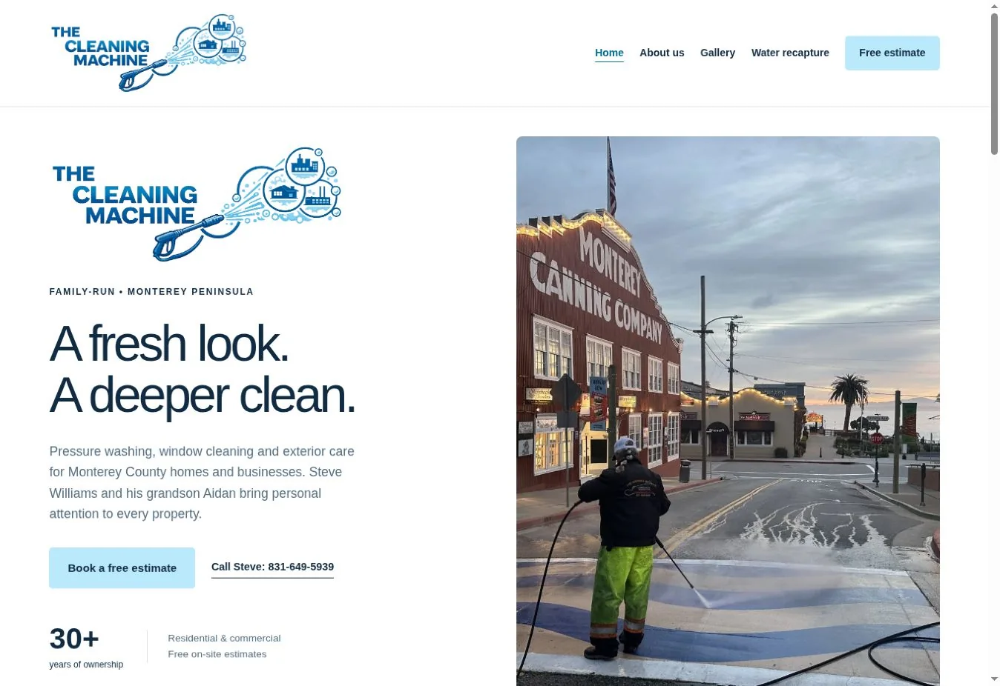
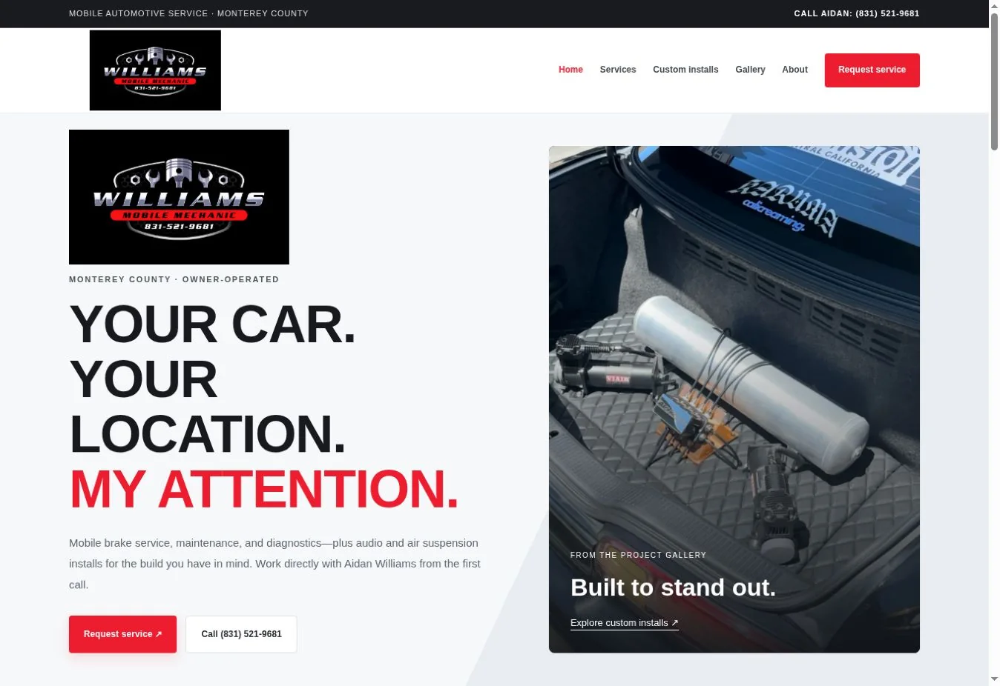

The Cleaning Machine
Website design · Exterior cleaning
Monterey County web design
I’m Aidan. I build straightforward websites for local businesses—so customers can see what you do and get in touch.
Featured work

Website design · Exterior cleaning

Website design · Automotive services
How it works
We’ll chat about your business, your goals, and what’s working—or missing—with your current site.
I’ll design and build your website, with your input before we move to the next step.
We’ll review the details, check the site on phones, and agree on how future updates will work.
Find a direction
Explore five working design examples. They’re starting points—not a limit on what we can create for your business.
These are fictional examples, separate from the real client work above. Your project’s pages, features, content, and price are agreed before we start.
You don’t need all the answers
Pick a few things you’d like your website to do. I’ll help turn that into a practical plan.
Use these as a starting point for your conversation with Aidan.
What do you have in mind?
Start fresh, improve what you have, or get help keeping things current. We’ll agree on the scope and price before work begins.
A clear home for your services, your work, and the details customers need.
Discuss a new siteA better layout, clearer content, and an easier path to getting in touch.
Discuss a refreshHelp with new photos, updated services, and changes after launch.
Discuss website careMeet your designer
I’m Aidan Williams. Running service businesses has taught me what customers need to know before they pick up the phone.
That shapes how I build websites: real work, clear services, and an easy way to reach you. You’ll work directly with me from our first conversation through launch.
Based in Monterey County, California.
Before we get started
Yes. They’re starting points. We can adapt the branding, content, layout, and features around your business, with the scope and price agreed before work starts.
It depends on the pages, content, features, and support you need. Tell me what you have in mind, and we’ll agree on a scope and quote before starting.
Yes. We can connect your existing domain when the new site is ready, keeping registration in your name.
Yes. I build responsive layouts and check readable text, navigation, forms, and contact options on small screens.
Yes. We can arrange individual updates or ongoing care. We’ll agree on the scope and cost before any work begins.
Let’s talk about your website
A new business, a dated website, or an idea you’re still figuring out—tell me a little about it.